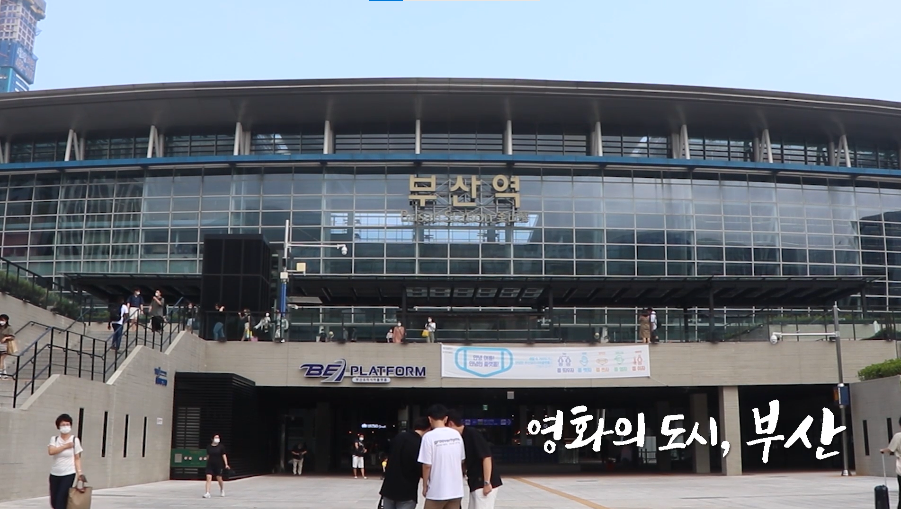
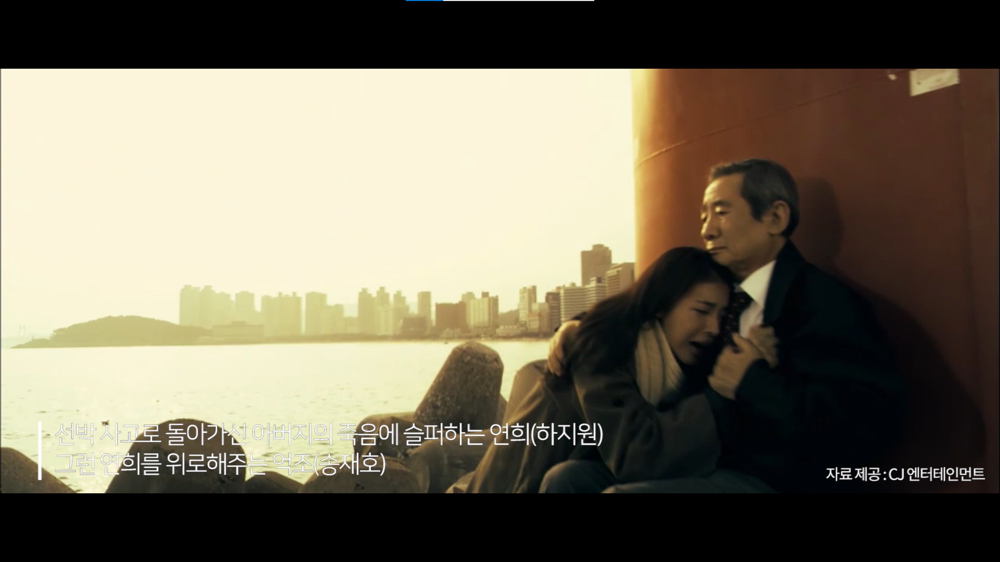
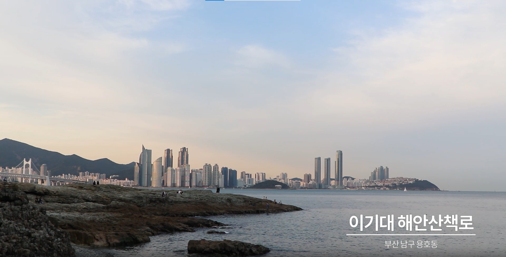
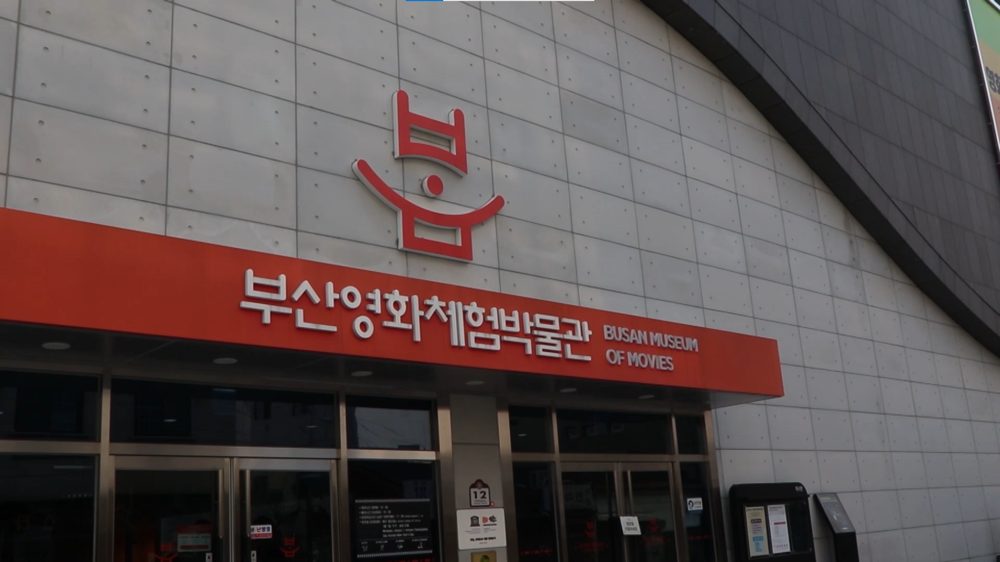
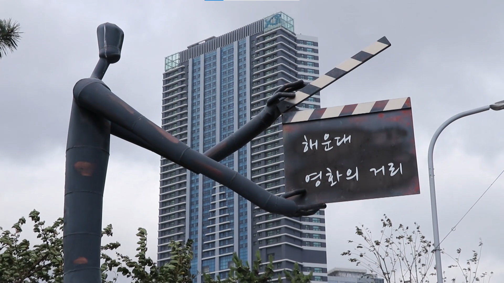
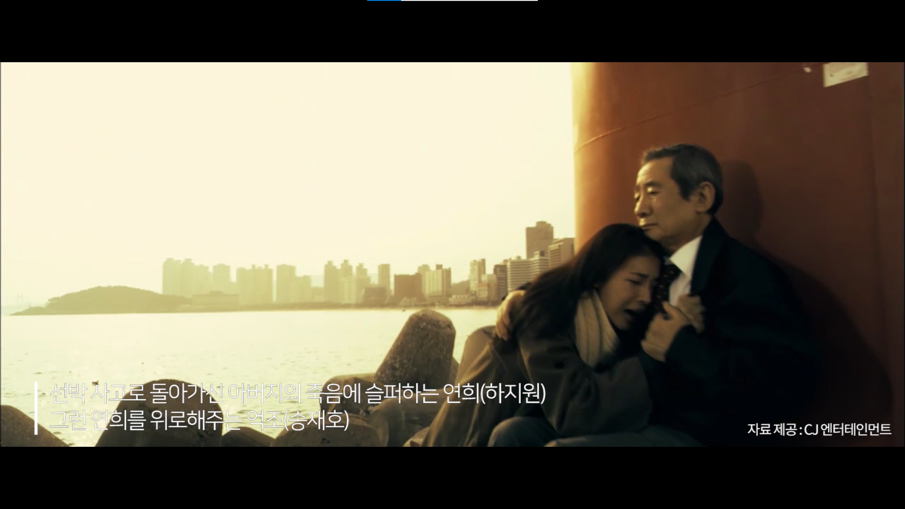
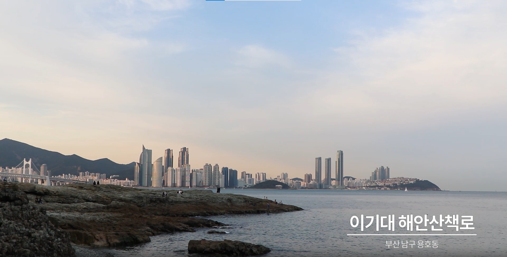
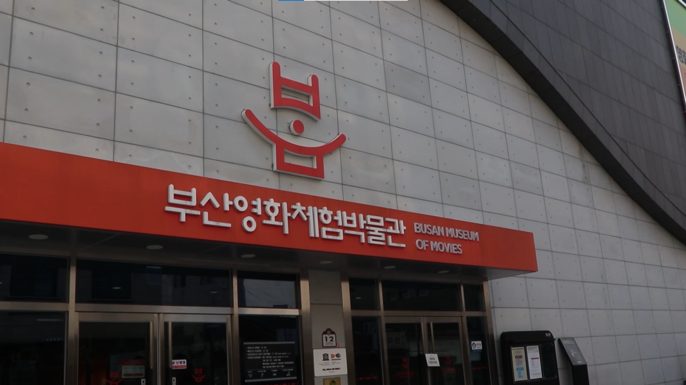
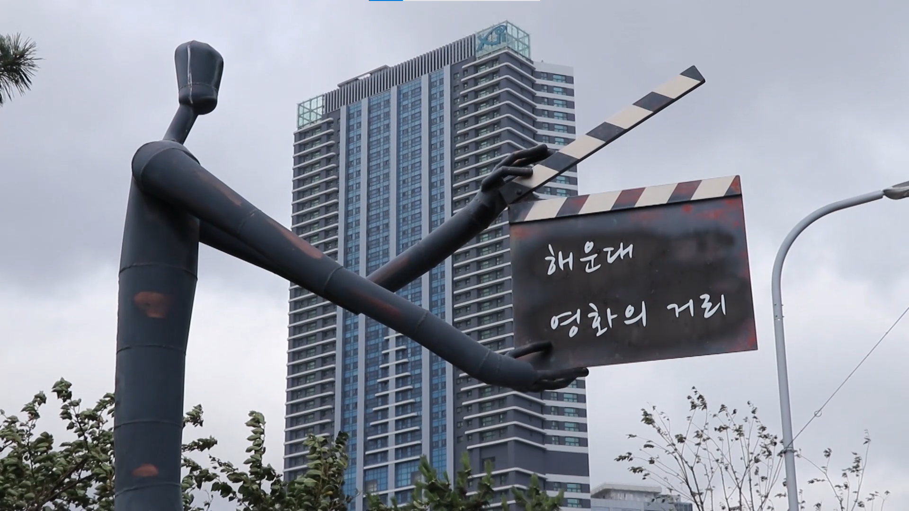

영화의 도시 부산 다큐멘터리

부산 영상 위원회와 영화의 전당 관계자 분들과의 미팅을 통해 인터뷰 진행 조금 더 전문적인 영화의 이야기를 나누고자 하기 위함.
 부산을 대표하는 영화를 고른 후 영화 장면에 나온 실제 장소를 찾아가 영화 촬영지의 현재 모습을 보여줌
 부산이 영화의 도시임을 알 수 있는 곳들의 이야기를 담음
부산 영상 위원회와 영화의 전당 관계자 분들과의 미팅을 통해 인터뷰 진행 조금 더 전문적인 영화의 이야기를 나누고자 하기 위함.
 부산을 대표하는 영화를 고른 후 영화 장면에 나온 실제 장소를 찾아가 영화 촬영지의 현재 모습을 보여줌
 부산이 영화의 도시임을 알 수 있는 곳들의 이야기를 담음